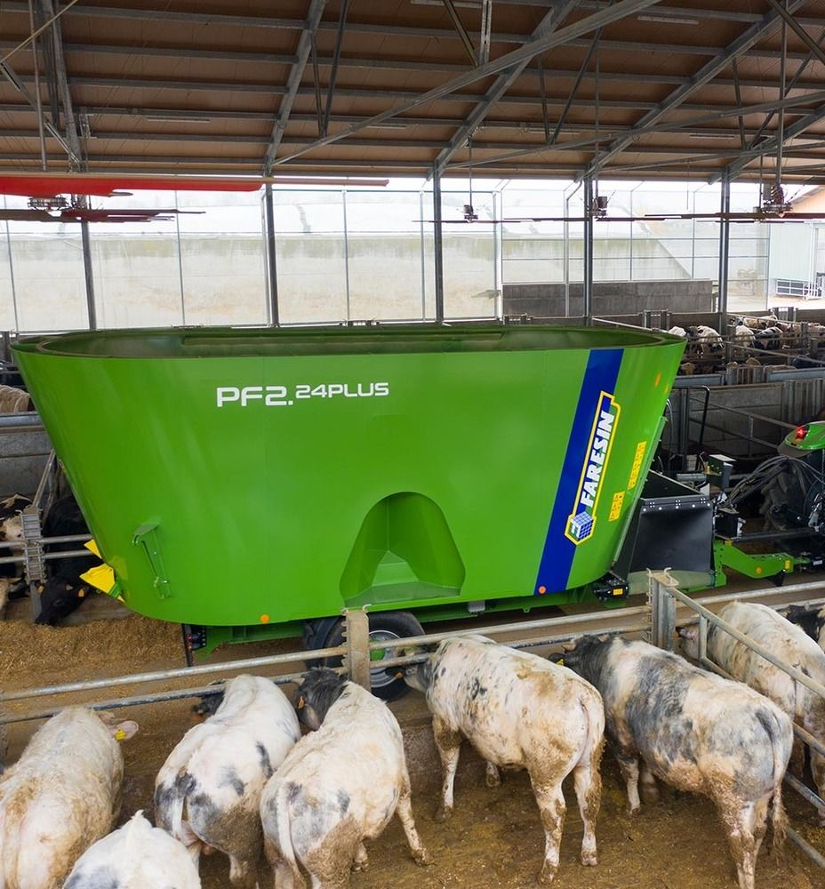
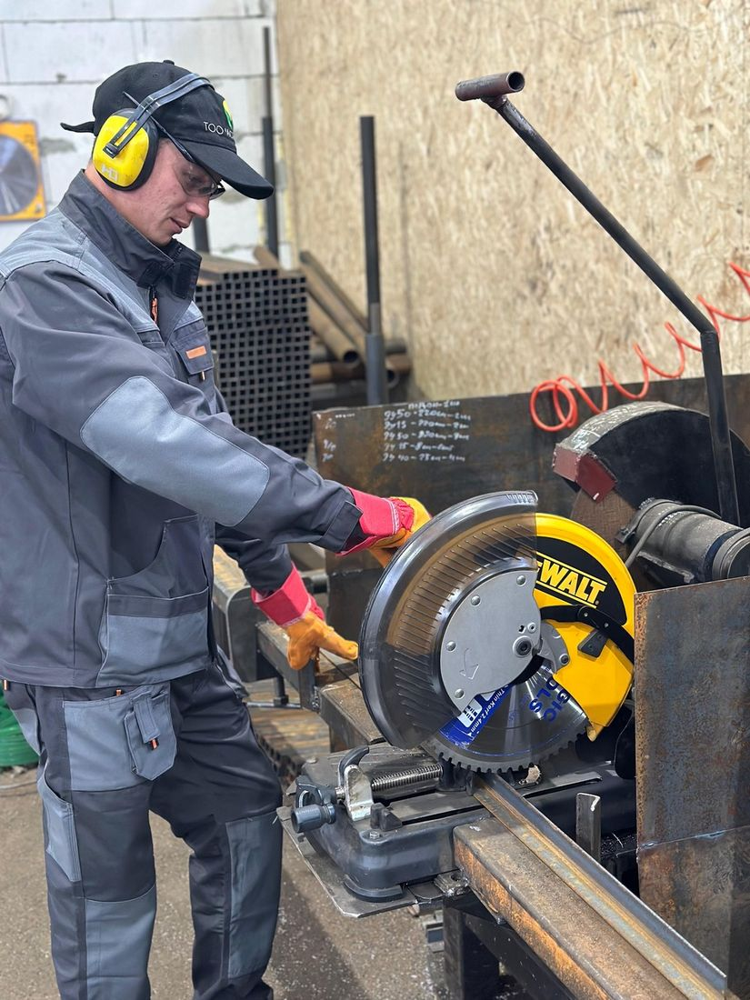
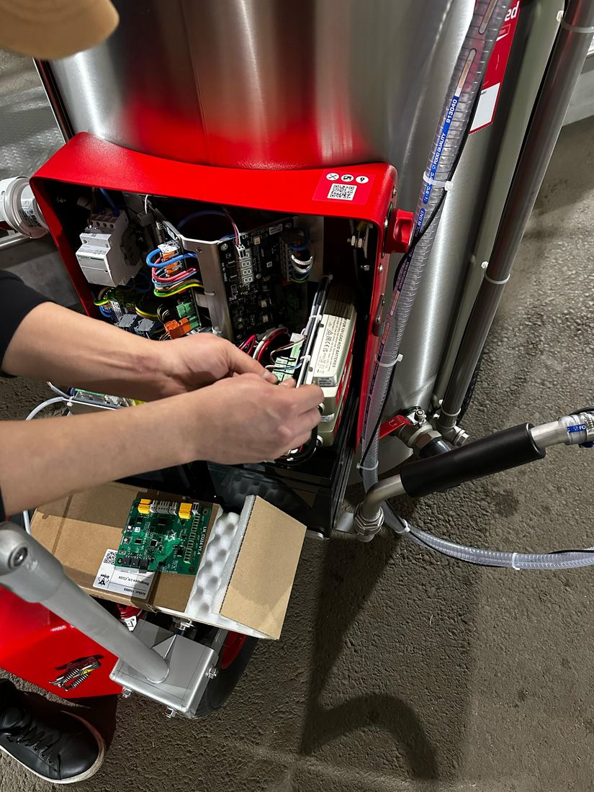
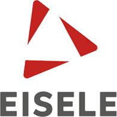

Stalleinrichtung
Komfortable Abtrennungen, Trennwände, Tore und mehr.
Preis anfragen →Seit 2017 Hersteller von Ausrüstung für Milchviehbetriebe in Kasachstan. Wir beraten, fertigen, liefern, montieren und warten — im ganzen Land.



Unser Ziel ist bezahlbare Ausrüstung: Als lokaler Hersteller sind wir für jeden Kunden da. Wir fertigen hochwertige, zuverlässige und moderne Ausrüstung nach Ihren Anforderungen.
Komfortable Abtrennungen, Trennwände, Tore und mehr.
Preis anfragen →Einzelboxen für die Kälberhaltung.
Preis anfragen →Schieberanlagen für die Entmistung.
Preis anfragen →Gruppenboxen für Jungvieh und den Abkalbebereich.
Preis anfragen →Klauen- und Behandlungsstände in verschiedenen Ausführungen.
Preis anfragen →Individuell für jedes Gebäude gefertigt.
Preis anfragen →Selbstfangendes Fressgitter für Rinder.
Preis anfragen →Beheizte Gruppentränken.
Preis anfragen →



Wir liefern Technik bewährter Marken und bieten Service, Ersatzteile und technischen Support.
Selbstfahrende und gezogene Futtermischwagen von Faresin erfüllen alle Anforderungen moderner Tierhaltungsbetriebe — sowohl in der Qualität als auch beim Platzbedarf.
Mehr erfahren →Dairymaster ist international anerkannt für Hightech-Ausrüstung für Milchviehbetriebe: Melktechnik, Fütterung, automatische Entmistungsschieber, Milchkühltanks sowie Gesundheits- und Brunstüberwachung.
Angebot anfragen →
Innovative Produkte für mehr Tierwohl. KRAIBURG ist führend in der Gummiindustrie.
Angebot anfragen →
Eisele-Pumpen für Landwirtschaft und Biogasanlagen — weltweit ein Garant für hohe Zuverlässigkeit, höchste Qualität und robuste Bauweise.
Mehr erfahren →
Fütterungsmanagement für mehr Effizienz im Betrieb: Wiegesensoren, NIR-Analysatoren, Datentracker und Software.
Angebot anfragen →
Mobile, bedarfsgerechte Kälberfütterung für jeden Betrieb. Effiziente und automatisierte Kälberaufzucht mit dem Tränkeautomaten Alma Pro.
Mehr erfahren →
Hochwertige Schneidmesser für alle Futtermischwagen: Siloking, Kuhn, BVL, Faresin, Triolet, AKM, KIS und andere. Immer auf Lager.
Angebot anfragen →Vier Abteilungen sorgen dafür, dass Ihre Ausrüstung pünktlich ankommt und ohne Ausfälle läuft.
Hilft bei Auswahl und Einführung moderner Ausrüstung für effiziente Milch- und Tierhaltungsbetriebe.
Sorgt für die rechtzeitige Beschaffung von Ausrüstung, Komponenten und Material für einen reibungslosen Projektablauf.
Organisiert die Lieferung von Ausrüstung und Material und überwacht Termine und Routen.
Übernimmt Montage, Wartung und schnelle Unterstützung für einen störungsfreien Betrieb.

Beschreiben Sie, was Ihr Betrieb braucht — wir wählen die passende Ausrüstung und senden Ihnen ein Angebot.